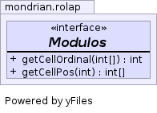

public interface Modulos
Suppose the result is 4 x 3 x 2, then modulo = {1, 4, 12, 24}.
Then the ordinal of cell (3, 2, 1)
= (modulo[0] * 3) + (modulo[1] * 2) + (modulo[2] * 1) = (1 * 3) + (4 * 2) + (12 * 1) = 23
Reverse calculation:
p[0] = (23 % modulo[1]) / modulo[0] = (23 % 4) / 1 = 3 p[1] = (23 % modulo[2]) / modulo[1] = (23 % 12) / 4 = 2 p[2] = (23 % modulo[3]) / modulo[2] = (23 % 24) / 12 = 1

| Modifier and Type | Interface and Description |
|---|---|
static class |
Modulos.Base |
static class |
Modulos.Generator |
static class |
Modulos.Many |
static class |
Modulos.One |
static class |
Modulos.Three |
static class |
Modulos.Two |
static class |
Modulos.Zero |
| Modifier and Type | Method and Description |
|---|---|
int |
getCellOrdinal(int[] pos)
Converts a set of cell coordinates to a cell ordinal.
|
int[] |
getCellPos(int cellOrdinal)
Converts a cell ordinal to a set of cell coordinates.
|
int[] getCellPos(int cellOrdinal)
getCellOrdinal(int[]). For example, if this result is 10 x 10 x 10,
then cell ordinal 537 has coordinates (5, 3, 7).cellOrdinal - Cell ordinalint getCellOrdinal(int[] pos)
getCellPos(int).pos - Cell coordinates